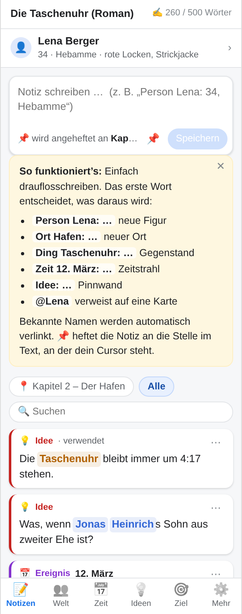
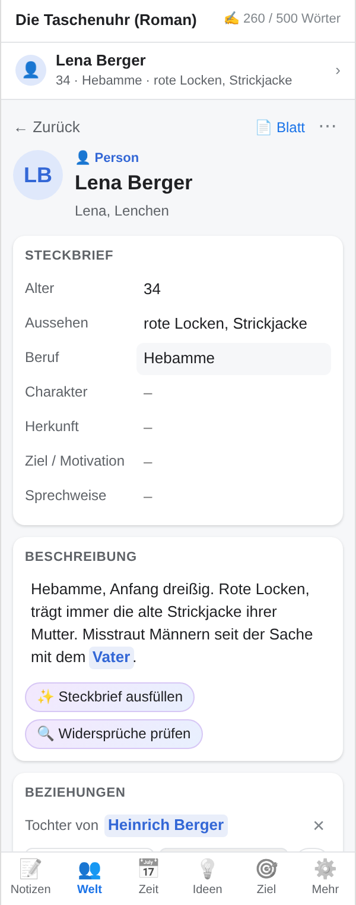
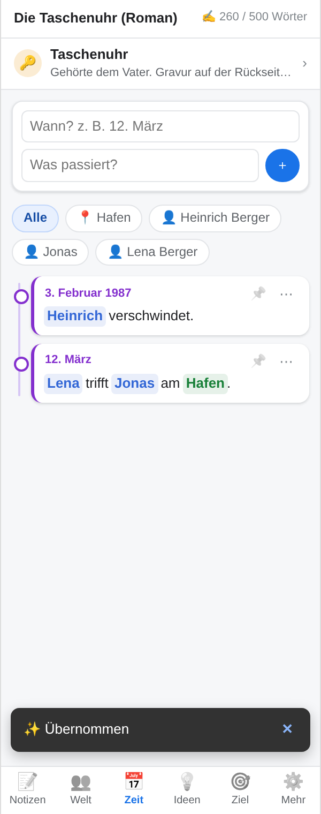
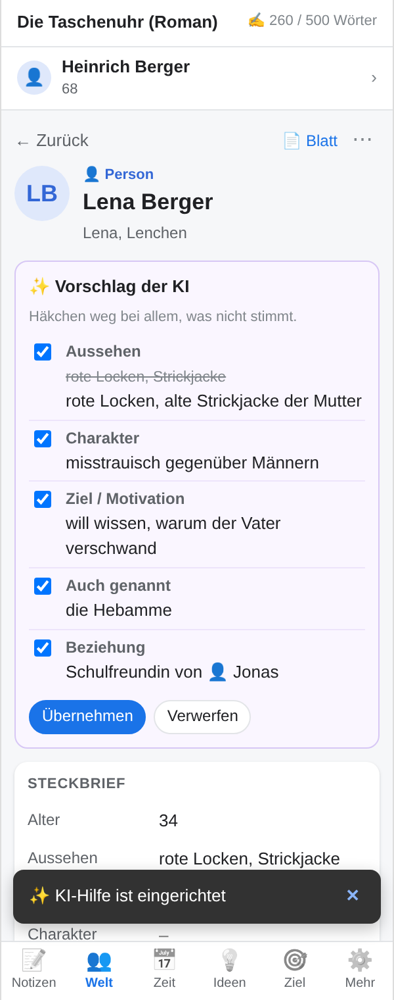

Für alle, die einen Roman schreiben – ob erstes Manuskript oder zehntes Buch. Die Buchwerkstatt ist deine Schreibwerkstatt in Google Docs: Figuren mit ausführlichem Steckbrief, Orte, Zeitstrahl, Ideen und Notizen in einer Seitenleiste direkt neben dem Manuskript. Du schreibst weiter, die Buchwerkstatt behält den Überblick.
Person Lena: 34, Hebamme legt eine Figur an,Ort Hafen: … einen Ort, Ding Taschenuhr: … einen Gegenstand,Zeit 12. März: … ein Ereignis im Zeitstrahl, Idee: … eine Karte auf der Pinnwand.



@Lena auch am Handy funktioniertAlles bleibt in deinem eigenen Google Drive: in einer Tabelle und einem Ordner neben deinem Manuskript. Es gibt keinen Server der Buchwerkstatt, keine Werbung und keine Auswertung. Die Buchwerkstatt sieht nur die Dateien, die sie selbst angelegt hat. Details stehen in der Datenschutzerklärung.
In Google Docs: Erweiterungen → Add-ons → Add-ons herunterladen und nach „Buchwerkstatt“ suchen. Link zum Marketplace-Eintrag folgt nach der Freigabe.
Fragen, Fehler oder Wünsche bitte als Issue auf GitHub. Der Quellcode ist offen einsehbar: github.com/Paradoxianer/buchwerkstatt.
For everyone writing a novel – first manuscript or tenth book. Buchwerkstatt (“book workshop”) is your writing workshop in Google Docs: characters with in-depth profiles, places, a timeline, ideas and notes in a sidebar right next to your manuscript. You keep writing, Buchwerkstatt keeps track.
Character Lena: 34, midwife, Place Harbour: …, When March 12: …, Idea: …Your data stays in your own Google Drive. There is no Buchwerkstatt server, no advertising and no tracking. See the privacy policy and terms of use. Support: GitHub issues.